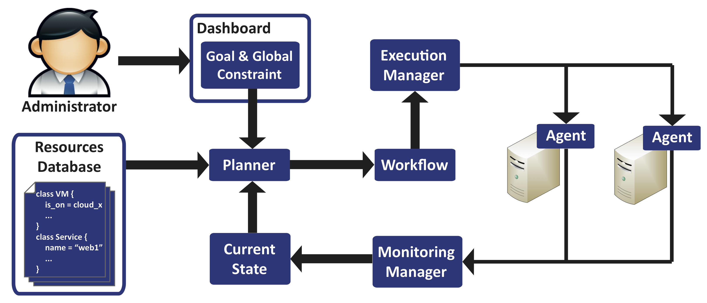

Nuri The Automated Workflow Configuration Tool
Download .zip
Download .tar.gz
View on Github
|
Mr.X: How do you configure your Cloud infrastructure?
User: I manually configure my Cloud. Mr.X: It is error-prone and time-consuming. User: I could use imperative scripts. Mr.X: There is no guarantee that you run the right script. User: I could use a declarative configuration tool such as Puppet, Chef or LCFG. Mr.X: To implement your specification, they execute the actions in indeterminate order which highly likely produces the wrong sequence. User: I could use IBM Tivoli, Microsoft System Center or ControlTier to execute a workflow. Mr.X: They are similar with imperative scripts where you must compose or choose the right workflow manually. User: Is there any better solution? Mr.X: Yes, you can use Nuri. |
Key Features
Resources
Contact
Herry - h.herry [at] sms.ed.ac.uk; herry13 [at] gmail.com
BSD License Powered by Ruby |
"Define your desired state and let Nuri achieves it for you"
